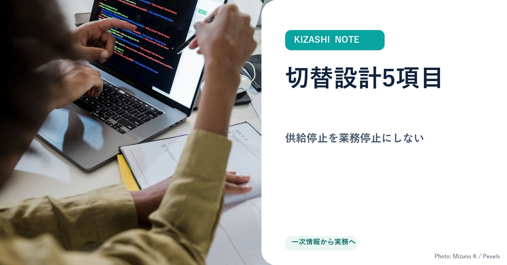
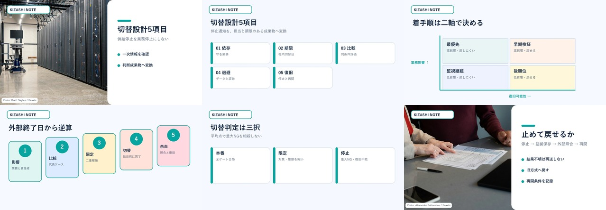

本文PASS／サムネイルPASS／外部未送信
AIモデル供給停止に備える「切替設計」実務キット
情報システム責任者・開発責任者向け。依存、期限、比較、退避、復旧を5つの成果物へ変えます。
本文監査 PASS4,166字／一次URL 4本
購入価値 PASS有料成果物5種類／95点
画像検査 PASS本文内6図版／実写＋判断図
表示検査 PASSPC／実幅375px／横溢れ0
投稿先：note @natty_swan9072／価格：100円／公開日時：承認後の次の15分境界／外部費用：0円

本文 SHA-256: 0872c2e32d5db034b88aa62e0cd89acaa2e1c67f9faa6c7b1c6bd134195e09f8
採用サムネイル SHA-256: 0144ab47e70ff35fc9ca2d1a5934324993f8b2171ff069814aff5af64dd9347c